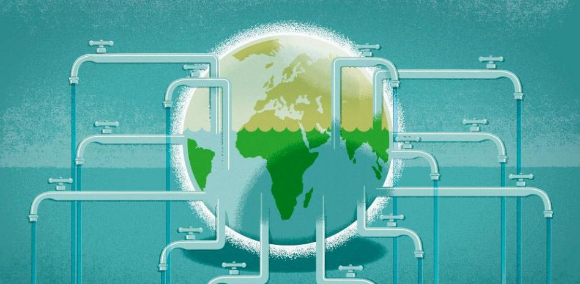
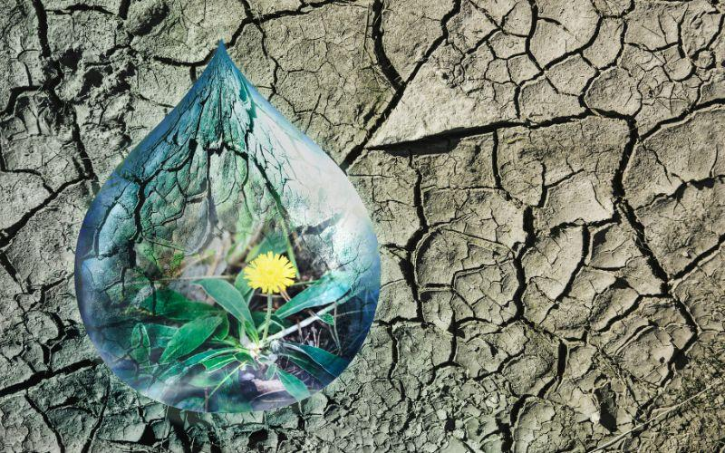

El agua es un bien natural que permite el desarrollo de la sociedad, la justicia social y contrarresta la pobreza. También resalta atribuciones culturales, simbólicas y es un elemento esencial para toda la biosfera.
No solo el agua se relaciona con lo económico y se argumenta bajo un desarrollo sostenible; sino que también se relaciona con la interculturalidad, es elemento sagrado para los pueblos originarios, y en la época de siembra para comunidades rurales.
En la historia de la humanidad el agua ha participado de manera importante en el origen de las civilizaciones; por ejemplo de los babilonios a los egipcios, el almacenamiento y la transportación del agua fue la base del crecimiento y desarrollo de estos pueblos. El agua además de ser fundamental para la vida, ha permitido el desarrollo económico y comercial. Sin embargo, el crecimiento poblacional y la industrialización dieron como resultado un incremento en la demanda del líquido, así como una mayor dispersión de las zonas urbanas en sitios desprovistos de agua, con un incremento en la necesidad de desarrollar más infraestructura para continuar abasteciendo las demandas de la población.
La importancia del agua para el ser humano es evidente, en tanto que el porcentaje de agua en nuestro cuerpo casi alcanza las dos terceras partes. Está presente en los tejidos corporales y en los órganos vitales. Es un elemento fundamental para procesos corporales vitales. Sin beber agua no podríamos sobrevivir más allá de tres o cuatro días.
El agua es esencial para el desarrollo de procesos orgánicos como la digestión, así como en la absorción y eliminación de desechos. Además, estructura el sistema circulatorio y distribuye nutrientes hacia todo el cuerpo a través de la sangre. Otros de los principales beneficios del agua para nuestro organismo son: mantiene la temperatura somática al eliminar el calor sobrante con su salida en forma de transpiración y vapor a través de la piel, alivia la fatiga, evita dolores de cabeza o reduce los riesgos de problemas cardíacos.
Por otro lado, vemos la importancia del agua a través de las actividades que realiza el ser humano. Principalmente porque se usa para la agricultura en un 70%, en un 15% en la industria y el otro 15% para uso doméstico.
El ciclo hidrológico es de gran importancia para los ecosistemas naturales y la regulación del clima. El agua está en continuo movimiento a través del cambio que efectúa en sus tres diferentes estados -líquido, sólido y vapor- y se encuentra tanto en la superficie terrestre como debajo de ella. La alteración del ciclo del agua, como está sucediendo con el cambio climático, supone también modificar la vida de los ecosistemas del planeta.
Aunque el total del agua presente es relativamente constante, no lo es su disponibilidad. De ahí la necesidad de tener clara la importancia del agua para llevar a cabo una gestión adecuada y sostenible de su consumo que evite el agotamiento de este recurso y el estrés hídrico.

La importancia del agua para las especies vegetales que componen nuestro medio natural es tal que un cuerpo vegetal está compuesto de ella en un 70-90%. Las plantas absorben el agua que procede de la lluvia, principalmente, aunque también puede ser a través del regadío.
La mayor parte del agua que absorben se pierde a través de la transpiración y usan tan solo cerca del 1% para sus procesos bioquímicos. Pero sin agua, el mundo vegetal estaría expuesto a la extinción; y el planeta, a la sequía.
El agua, como disolvente universal, disuelve muchas sustancias. Característica que permite que sea un medio de transporte para los nutrientes minerales que se encuentran en el suelo y que así llegan a las plantas. A su vez, es un reactivo químico que permite la fotosíntesis, esencial para la vida.